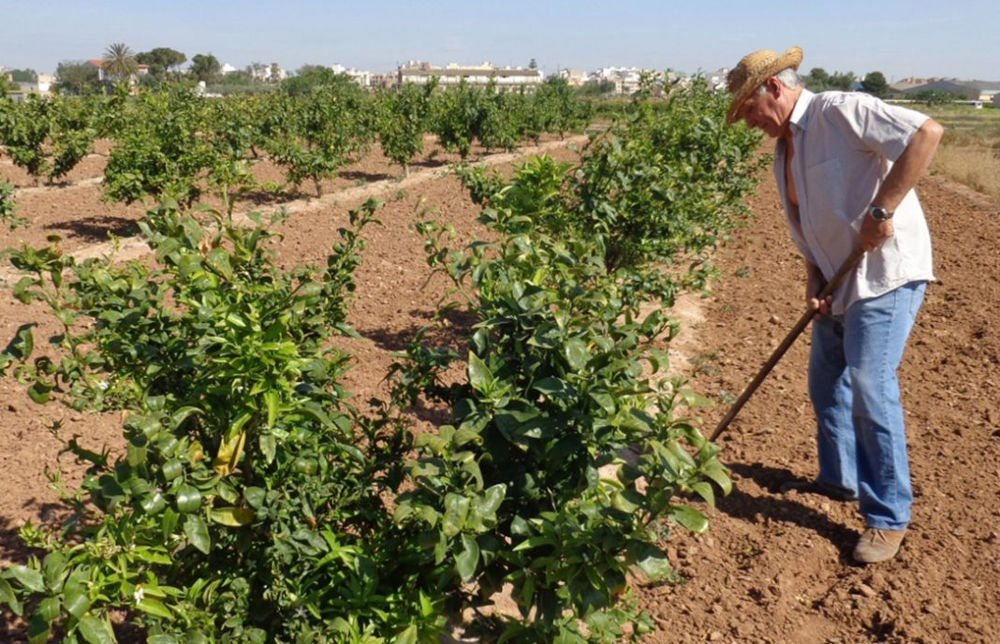

Nueva propuesta para que los jubilados dejen de cobrar la PAC y todo el dinero se destine al agricultor genuino
Asturias, al igual que ya lo planteara el año pasado por estas fechas Cantabria, quiere expulsar a los jubilados del cobro de las ayudas de la PAC. El Principado defiende, ante la nueva definición de la Política Agraria Común que regirá desde 2021 hasta 2027, que las ayudas directas se reserven para los “agricultores genuinos” o “profesionales”, con un límite por explotación, que la Comisión Europea fija en 100.000 euros, pero que el Principado cree que debe rebajarse hasta los 60.000 euros .
Asturias defiende también que se pague más por las primeras hectáreas, para no discriminar a las pequeñas y medianas explotaciones, y que se contemple la discriminación positiva de los territorios de montaña, por sus especiales dificultades en el manejo ganadero y agrario.

Aceitunas de silicona para cazar a los ladrones
El agricultor Antonio Berrio y su familia veían cómo, campaña tras campaña, les robaban parte de su cosecha de aceitunas. Cansado de esta situación, Berrio y su amigo Ricardo Cárdenas decidieron ponerse manos a la obra y diseñar un dispositivo de seguridad que evitara estos robos, en particular, y en el campo, en general. Así fue como nació Agrosecurity.
Tal y como explican estos emprendedores, el proyecto se basa en el diseño de una aceituna artificial, a la que llaman señuelo, que incorpora en su interior un elemento de identificación por radiofrecuencia.
Así, a través de un detector o lector, tanto en las cooperativas como los propios agentes de la Guardia Civil podrán averiguar si los frutos son robados. Este agricultor y este abogado señalan que la idea podría aplicarse a otro tipo de cultivos tales como uva, almendra y naranja, entre otros.